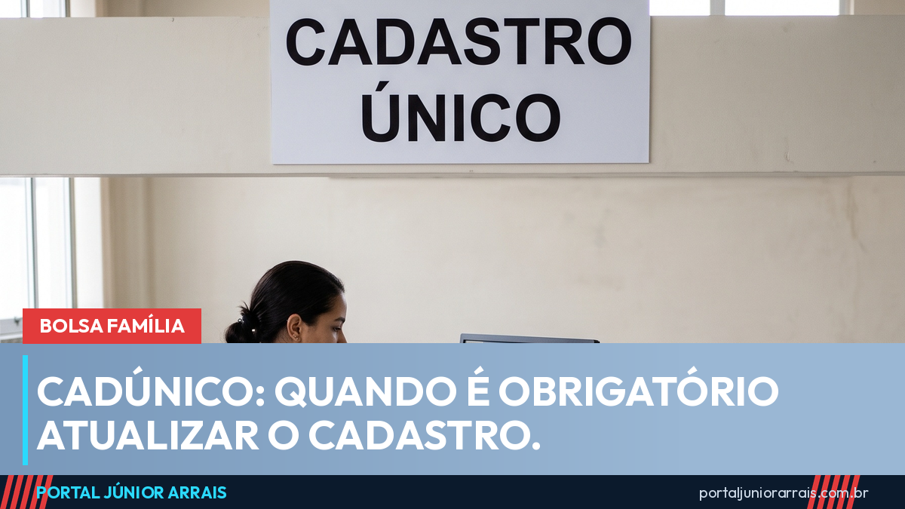

CadÚnico: quando é obrigatório atualizar, mesmo que nada tenha mudado

O Cadastro Único é a porta de entrada de quase todos os programas sociais do país. Bolsa Família, BPC, desconto na conta de luz, Pé-de-Meia, programas de moradia: quase tudo consulta essa base. E é justamente por isso que cadastro desatualizado dá tanto problema.
Existem dois prazos, e as pessoas só conhecem um
O primeiro é o que todo mundo já ouviu: o cadastro precisa ser atualizado a cada dois anos, mesmo que absolutamente nada tenha mudado na família. Esse prazo existe para confirmar que as informações continuam valendo.
O segundo prazo é o que mais derruba benefício: sempre que alguma coisa muda, a atualização precisa ser feita na hora, sem esperar os dois anos. Muda alguma coisa quando:
- alguém nasce, morre ou sai de casa;
- a família muda de endereço;
- alguém começa ou perde um trabalho, ou a renda muda;
- uma criança troca de escola;
- alguém do grupo tira documento novo.
O que acontece se ficar desatualizado
O cadastro velho não some, mas fica em situação irregular. Na prática, isso costuma significar bloqueio e, se ninguém resolver, cancelamento do benefício. E o efeito é em cadeia: como vários programas leem a mesma base, uma família pode perder o Bolsa Família e o desconto na conta de luz ao mesmo tempo.
Um detalhe importante sobre renda: informar renda maior não significa perder tudo automaticamente. Existem regras de transição para quem melhora de vida. O que costuma causar problema de verdade é o cadastro dizer uma coisa e a realidade dizer outra.
Cuidado com golpe
Todo período de revisão cadastral vem acompanhado de mensagens falsas: link para "atualizar o CadÚnico pelo celular", cobrança de taxa para "não perder o benefício" e pedido de senha ou foto de documento por aplicativo. Atualização cadastral não se faz por link recebido em mensagem, e nenhum órgão do governo cobra taxa nem pede Pix para isso.
Se a família recebeu aviso de bloqueio e não entendeu o motivo, vale procurar um profissional de sua confiança para conferir a situação antes de tomar qualquer atitude.
Conteúdo informativo — não substitui orientação individualizada sobre o seu caso.